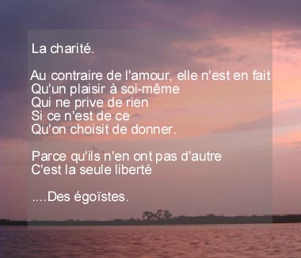

La charité
Au contraire de l'amour, elle n'est en fait Qu'un plaisir
à soi-même Qui ne prive de rien
Si ce
n’est de ce Qu'on choisit de donner.
Parce qu'ils n'en ont pas d'autre C'est la seule
liberté Des égoïstes.